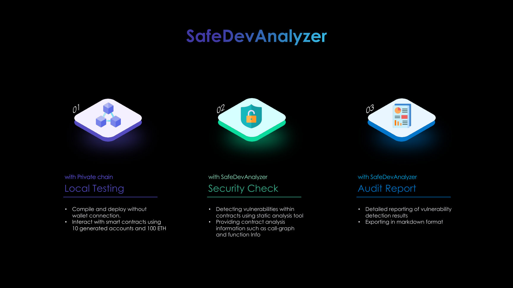
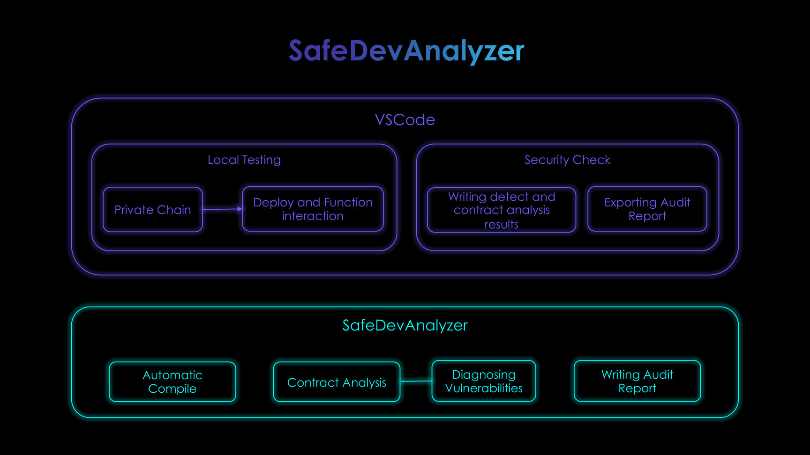
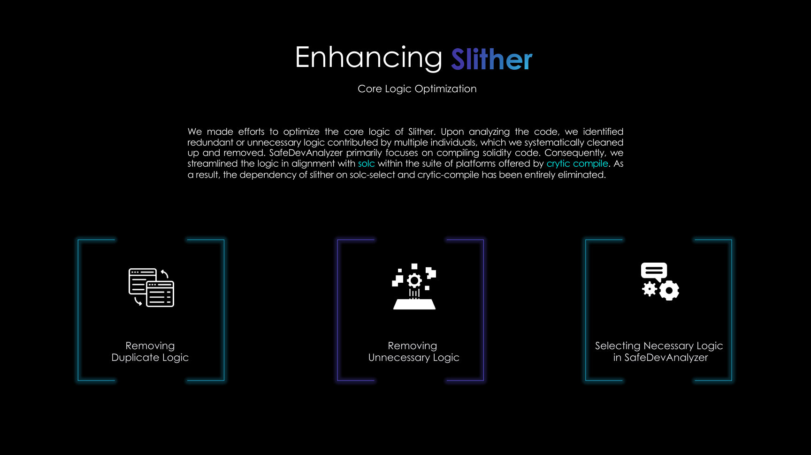
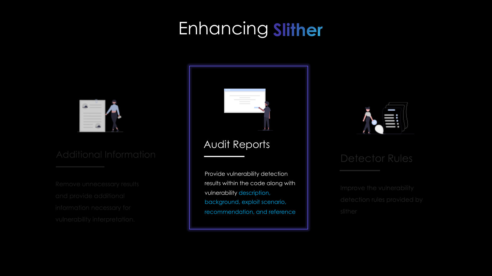

해결해야 한 문제
컨트랙트 작성, 컴파일, 로컬 실행, 정적 분석이 서로 다른 도구에 흩어져 있었습니다. Solidity 버전마다 컴파일러를 직접 설치하고 전환해야 했고, Slither의 원시 결과만으로는 보안 지식이 적은 개발자가 원인과 수정 방향을 알기 어려웠습니다.
Tool / Smart Contract
스마트 컨트랙트를 배포하기 전에 코드와 취약점을 확인하는 VS Code 도구입니다.
컨트랙트 작성, 컴파일, 로컬 실행, 정적 분석이 서로 다른 도구에 흩어져 있었습니다. Solidity 버전마다 컴파일러를 직접 설치하고 전환해야 했고, Slither의 원시 결과만으로는 보안 지식이 적은 개발자가 원인과 수정 방향을 알기 어려웠습니다.
직접 여러 분석 도구를 설치하고 사용하면서 환경별 오류와 부족한 문서 때문에 분석보다 설정에 더 많은 시간이 드는 경험을 했습니다. 코드가 배포되기 전에 개발자가 스스로 점검할 수 있어야 외부 감사도 더 구체적인 쟁점에 집중할 수 있다고 판단했습니다.
VS Code 안에서 컴파일, 배포, 함수 상호작용과 취약점 점검을 이어서 수행하고, 탐지 결과를 수정 가능한 정보로 전달하는 개발 환경을 목표로 잡았습니다.
웹과 독립 GUI도 검토했지만 여러 사용자의 실행 상태를 서버에서 관리해야 했습니다. Hardhat, Remix, Ganache의 로컬 체인 구조와 Slither, Crytic Compile의 분석 흐름을 분석했고, 코드 유사도로 취약 로직을 찾는 방법도 실험했습니다.
개발자의 기존 작업 공간을 유지하는 VS Code Extension과 사용자 로컬에서 동작하는 EthereumJS 체인을 선택했습니다. 분석 코어는 Slither를 무리하게 재작성하기보다 필요한 컴파일과 결과 처리 경로를 감싸고, 신뢰할 수 없었던 코드 유사도 기능은 최종 범위에서 제외했습니다.
pragma의 버전 조건을 읽어 필요한 solc를 설치하고 전환하는 컴파일 파이프라인을 구현했습니다. 컴파일 결과의 ABI와 bytecode로 로컬 배포와 함수 상호작용을 제공하고, call graph·함수·스토리지 정보를 분석 화면에 연결했습니다.
취약점별 영향도, 코드 위치, 배경, 공격 시나리오, 권고안, 예시와 출처를 국문과 영문 보고서로 생성했습니다. 결과 행을 누르면 실제 코드 위치를 강조하도록 연결했습니다.
The Merge 이후 EthereumJS의 필드와 가스 처리 문서가 충분하지 않았고, Crytic Compile 내부는 결합도가 높아 직접 변경할수록 유지보수가 어려워졌습니다. VS Code Webview에서는 일반 웹 라이브러리와 CSP 정책도 그대로 적용되지 않았습니다.
공식 문서와 구현 코드를 대조해 Shanghai 하드포크와 EIP-1559 조건을 맞췄습니다. 컴파일러 내부 전체를 바꾸지 않고 SolcParser와 필요한 출력 경로를 분리했으며, Audit Report의 설명은 Solidity 문서와 OpenZeppelin 등 확인 가능한 자료에 근거를 연결했습니다.
초기 계획의 90%를 구현했습니다. 제외한 10%는 신뢰할 만한 판정 근거를 만들지 못한 코드 유사도 기반 취약점 탐지였습니다. 완성한 두 핵심 흐름은 컴파일·상호작용과 보안 분석 데모로 검증했고, Protocol Camp 5기 대상과 융합보안소프트웨어 경진대회 대상을 받았습니다.
배포 전 개발 흐름을 하나의 도구로 잇는 목표는 달성했습니다. 다만 정적 분석의 탐지 결과가 전문 보안 감사나 실제 배포 환경의 검증을 대체한다고 보지는 않았습니다.
팀장으로 범위와 일정을 조율하고, Security Analysis Core와 컴파일 파이프라인을 담당했습니다. 분석 결과를 단순 경고가 아니라 검토자가 재확인할 수 있는 보고서로 바꾼 것이 핵심 기여입니다.
도구의 탐지 범위만큼이나 실행 환경의 재현성과 결과의 설명 가능성이 중요했습니다. 구현하지 못한 기능을 남기는 것보다 판정 근거가 약한 기능을 제외하는 편이 더 신뢰할 수 있는 제품 판단이라는 점도 배웠습니다.
정적 규칙은 거래 순서, 오라클, 외부 계약과 결합된 비즈니스 로직을 충분히 설명하지 못합니다. 로컬 체인과 Webview도 실제 메인넷의 모든 실행 조건을 재현하지 않습니다.
가스와 스토리지 점검, 트랜잭션 롤백, 더 넓은 테스트 환경을 보강할 수 있습니다. 이 프로젝트에서 확인한 정적 분석의 경계는 이후 온체인 거래와 상태 변화를 함께 보는 연구로 이어졌습니다.
금융형 스마트 컨트랙트의 배포 승인 전에 컴파일 환경, 권한과 자금 관련 함수, 남은 경고를 같은 절차로 확인하는 사전 점검 도구로 해석할 수 있습니다. 외부 감사의 대체재가 아니라 내부 개발 검토와 협력사 코드 리뷰의 입력을 표준화하는 역할입니다.



